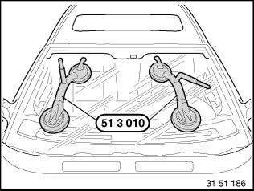
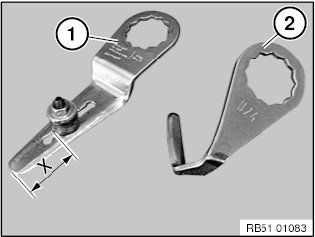
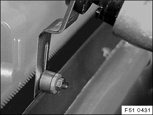
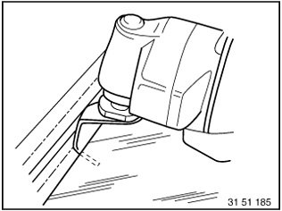
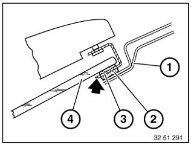

51 31 ... Removing Windows With an Oscillating Knife
51 31 ... Removing Windows With An Oscillating Knife
WARNING: Follow safety instructions for working on vehicles with airbag systems (risk of injury).
IMPORTANT: Handle sharp-edged tools with care (risk of damage to the head airbag and the window glass).
IMPORTANT:
- Follow the vehicle-specific repair instructions.
- Always wear safety goggles and protective gloves for your own safety.
- Cover the working area (side walls, roof-mounted aerial and if necessary interior equipment) with protective covers.
- Tape off body with fabric adhesive tape (e.g. Tesa) in areas where the oscillating knife could damage the window glass or the paint.

Use suction cups (51 3 010) to lift out the window glass.
Always keep both suction cups dry and clean to ensure their optimum adhesion on the windscreen.
Secure window glass against falling out.

Depending on the area of application, knife 1 or 2 is used.
(1) Straight knife with adjustable thrust roller
(2) U-shaped knife
Dimension (X) on the knife (1) can be adjusted individually, see vehicle-specific repair instructions.
NOTE: Sharpen knife blade before every use on a running machine with a grinding stone (even with new knife blade).

Removing from the inside:
Guide knife carefully between body and window glass.
Run blade of knife parallel to glass.
Take care not to damage paintwork.
Cut through adhesive bead all the way around.
Pull window glass outwards to remove.

Removal from outside:
Guide knife carefully between body and window glass.
Run blade of knife parallel to glass.
Take care not to damage paintwork.
Cut through adhesive bead all the way around.
Pull window glass outwards to remove.

Cut through adhesive bead as closely as possible to window glass.
(1) Body opening
(2) Adhesive bead
(3) Knife
(4) Window